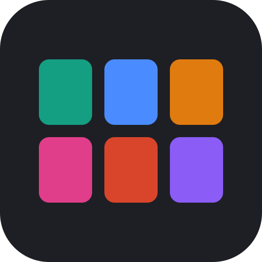
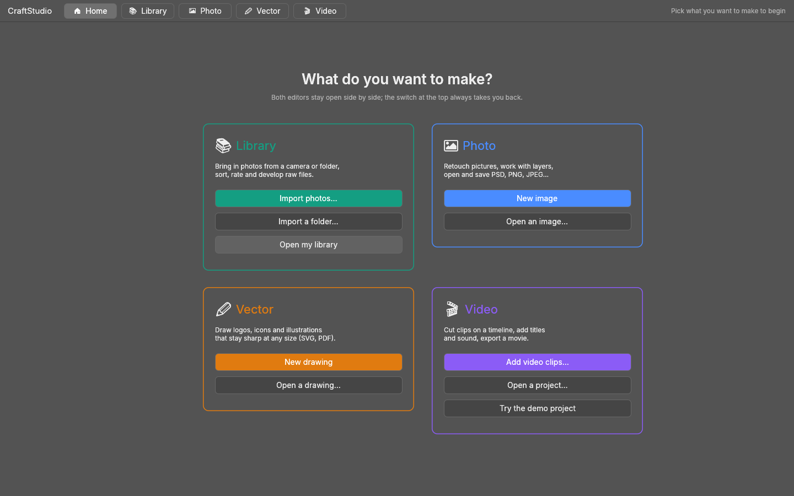
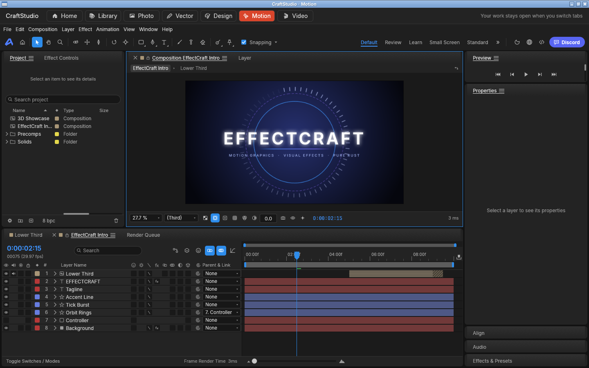
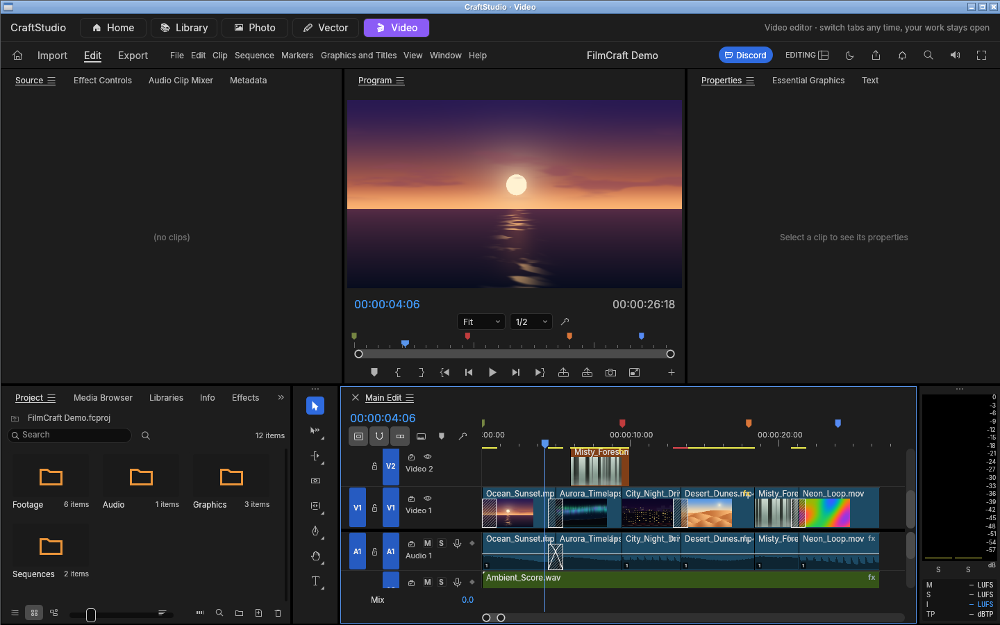
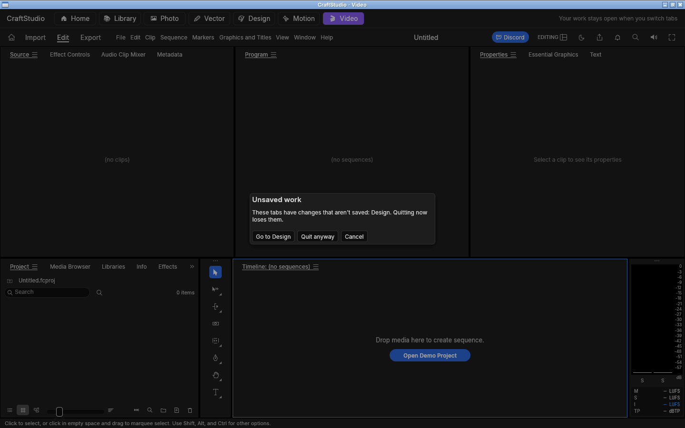

CraftStudio
Six creative apps in one window, with a Home screen that says what each is for and a switch at the top that always takes you back. Your work stays open when you switch.
- LibraryImport, sort, rate and develop photos and raw files (LightCraft)
- PhotoRetouch pictures with layers; PSD, PNG, JPEG (PhotoCraft)
- VectorLogos and illustrations that stay sharp; SVG, PDF (VectorCraft)
- DesignScreens for apps and websites, components, prototypes (FigCraft)
- MotionAnimated titles, graphics and visual effects (EffectCraft)
- VideoCut clips on a timeline, add titles and sound (FilmCraft)
Screenshots




Get it
CraftStudio is a desktop program for Linux; it does not run in the browser. Build it next to the six upstream projects:
git clone https://github.com/storytold/lightcraft git clone https://github.com/storytold/photocraft git clone https://github.com/storytold/vectorcraft git clone https://github.com/storytold/figcraft git clone https://github.com/storytold/effectcraft git clone https://github.com/storytold/filmcraft cd craftstudio cargo build --release # target/release/craftstudio
Sound needs ALSA (libasound2-dev) to build. Details are in craftstudio/README.md.